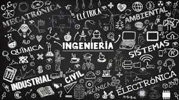

La ingeniería es el conjunto de conocimientos científicos y tecnológicos para la innovación,
invención, desarrollo y mejora de técnicas y herramientas para satisfacer las necesidades y resolver problemas técnicos tanto de las personas como de la sociedad.
El ingeniero se apoya en las ciencias básicas (matemática, física, química, biología, ciencias económicas y administrativas, ciencias de la ingeniería, ingeniería
aplicada) tanto para el desarrollo de tecnologías, como para el manejo eficiente y productivo de recursos y fuerzas de la naturaleza en beneficio de la sociedad. La
ingeniería es una actividad que transforma el conocimiento en algo práctico.
La ingeniería aplica los conocimientos y métodos científicos a la invención o perfeccionamiento de tecnologías de manera pragmática y ágil, adecuándose a las
limitaciones de tiempo, recursos, requisitos legales, requisitos de seguridad, ecológicos, etc.
Su estudio como campo del conocimiento está directamente relacionado con el comienzo de la Revolución Industrial, constituyendo una de las actividades pilares en
el desarrollo de las sociedades modernas.
Actualmente la ingeniería se clasifica en diversas áreas según su campo de aplicación.
Los ingenieros utilizan el conocimiento de la ciencia, las matemáticas y la experiencia para encontrar las mejores soluciones a los problemas concretos, creando los
modelos matemáticos de los problemas que les permiten analizarlos rigurosamente y probar las soluciones potenciales. Si existen múltiples soluciones razonables, los
ingenieros evalúan las diferentes opciones de diseño sobre la base de sus cualidades y eligen la solución que mejor se adapta a las necesidades, costo, seguridad y
otras condiciones de contorno.
En general, los ingenieros intentan probar si sus diseños logran sus objetivos antes de proceder a la producción en cadena. Para ello, emplean entre otras cosas
prototipos, modelos a escala, simulaciones, pruebas destructivas y pruebas de fuerza. Los ensayos comprueban si los artefactos funcionarán como se había previsto. Los
ingenieros deben tomar muy seriamente su responsabilidad profesional para producir diseños que se desarrollen como estaba previsto y no causen un daño inesperado a
la gente en general. Normalmente, los ingenieros incluyen un factor de seguridad en sus diseños para reducir el riesgo de fallos inesperados.